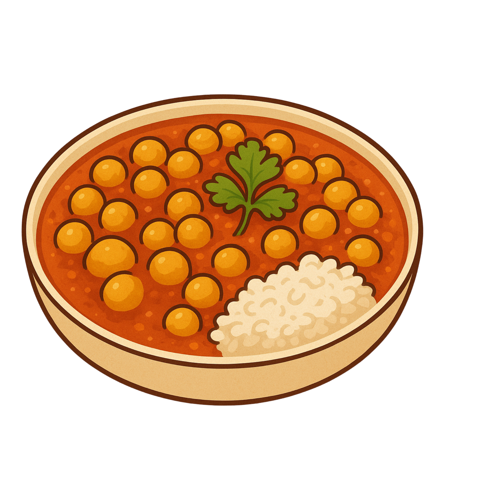

- Chickpeas
- Water
- Oil
- Ginger
- Tomatoes
- Onions
- Chili Powder
- Coriander Powder
- Cumin Powder
- Garam Masala
- Tumeric
- Cumin
- Coriander
- Salt
History Of Channa Masala
Chickpeas were cultivated for thousands of years in the Middle East and India. The Portuguese introduction of tomatoes and Central Asian introduction of onions, garlic, ginger later added the essential heat and flavor to the chickpea curry by the 19th century. During the Mughal Era (16th-19th century), the influence of Persian culture introduced aromatic spices (coriander, cumin, turmeric, garam masala) to India, becoming the basis of what makes a good Channa Masala.
- Drain the chickpeas, but save the water
- Dice the tomatoes and onions
- Set aside the spices